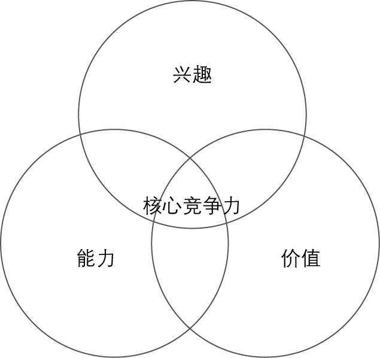

1.创业者无处不在。你不一定非要在车库里折腾才算是创业。
在我定义的创业企业中工作的任何人，都算得上是创业者。所谓的新创企业就是在充满不确定性的情况下，以开发新产品和新服务为目的而设立的个人机构。这意味着创业者无处不在，而且精益创业的方法可以运用到各行各业，在任何规模的公司，甚至是庞大的企业中。
2.创业即管理。
新创企业不仅代表了一种产品（的问世），更是一种机构制度，所以它需要某种新的管理方式，特别是要能应对极端不稳定的情况。事实上，我相信“创业企业家”应该是一个在所有现代企业中使用的头衔，因为企业未来的增长需要依靠创新。我将在后文中详细论述这一点。
3.经证实的认知。
新创企业的存在不仅仅是为了制造产品、赚取金钱、服务顾客，它们的存在更是为了学习了解如何建立一种可持续的业务。创业者们可以通过频繁的实验检测其愿景的各个方面，这种认知是可以得到验证的。
4.开发—测量—认知。
新创企业的基本活动是把点子转化为产品，衡量顾客的反馈，然后认识到是应该改弦更张还是坚守不移。所有成功的新创企业的流程步骤都应该以加速这个反馈循环为宗旨。
5.创新核算。
为了提高创业成果，并让创新者们负起相应责任，我们需要关注那些乏味的细枝末节：如何衡量进度，如何确定阶段性目标，以及如何优先分配工作。这需要为新创企业设计一套新的核算制度，让每个人都肩负职责。 这一类书有个最大的好处就是结构清晰，没时间只看看大小标题和每章第一段再看个例子足以把握书中的要点。所以如果想快速了解这本书的话，作者本人总结的上面五点足够了。但这里想说的确是另外一个引申开来的故事：做研究与创业的关系。
自己直到现在还在思索的一个问题：毕业后是继续做研究呢还是去创业？读完这本书后我得到一个启发，无论是创业还是做研究都是一种思维的表现形式，而对自己思维方式的训练非常重要，可以做到以不变应万变。何况研究和创业是那么相像：研究和创业都要发挥创新性生产产品，对于创业来说提供的实实在在的物、虚拟的物及提供的服务都属于产品，而对研究来说创造的“知识”和写作的文章就是对应的产品，两者的不同是创业的产品面对的对象是具体使用这些产品的人，而知识的对象没有那么具体，可以认为是相关领域的学术圈子。而研究和创业之间有几个共同的思维方式很值得讨论：1）MVP （minimum viable product）最小可行化产品。2）开发-测量-认知的反馈机制。3）减少“浪费”。
1）最小可行化产品。对于创业来说就是尽快做出有基本功能的第一代产品，面对用户的实验，迭代进化，及时调整。互联网时代这种思维特征越发重要，因为它可以及时发现存在的问题，找到真正的消费者需求，同时转型成本相对较低。但在学术研究中确很少有人用这种方式进行问题的思考，特别是自己。刚开始做研究很容易陷入一个误区，要列一个宏伟的框架，恨不能解释世间万物，还不会开汽车就想造个火箭。对比创业，其实研究也应该快速切入，做出一个“产品”。具体说就是找到选题后尽快写一些综述性的文字，从中发现自己的兴趣点，再快速切入写一些小的文章，接受自己和同行的评判。在选题上也可以参考创业，不要一上来就要做一个阿里巴巴，做一个大平台，而可以从细分领域切入，选“一个有意义、有延展性的问题，而且不要太难”（王汎森）。
然后是写作过程。任何一个企业都是由小到大的，做一个研究也是如此，硕士博士论文字数的要求都远超我们之前写作教育的要求，把十几万字写得有逻辑、条理不是一件容易事。因此循序渐进练习写作就非常重要。从一两千到四五千再到一两万字慢慢开始，然后才可能积累成十几万字的论文。这一点极像企业一个产品一个产品开发，每个产品还在不断完善，最终成为一个有体系的产品系列（比如APPLE，iPod和Mac的研发为它开发itouch做了积累，itouch又为iphone做了积累，再到后来的iPad。特别是现在流行的iphone也是不断完善到3GS后才开始成熟，如果你现在拿到一个iphone1代，对一个低分辨率、无多媒体信息、无蓝牙、无音频录制、无照片编辑功能、低电池带电时间、小内存、通话质量很差的产品能有几份热爱？）
2）开发-测量-认知的反馈机制。人们总是对自己辛苦创造的东西有过高的评价，而客观上并非如此，所以需要尽快开发出来后经过市场检验，并且进行有效的测量，转化为认知然后再进行开发。有一个实验研究，让一组实验人群A照着一本说明书折一个折纸作品，完成后给一个自己认为的市场估价，然后再找人群a面对这些作品给出一个估价，结论很容易猜到，折纸的人群A给出的估价高于没有参于折纸的人群。更有意思的是科学家们又做了一组实验，把折纸说明书拿走只给一个最终效果的图片，让人群B折纸，这时因为没有说明，大多数人费了很大劲确折的皱皱巴巴，同样让人群B和一组没有参与折纸的人郡b对作品进行估价。有意思的是人群B给出的估价高于人群A，而人群b给出的估价不仅小于人群B还小于人群a，既对于估价来说人群B>人群A>人群a>人群b。因为付出的努力多，所以带来的评价越不客观。
测量的有效性对于不同类型的产品不一样，对于学术研究来说，太容易产生自我感觉良好的认知机制（因为付出了巨大努力）。所以可以多利用一些客观指标+主观评价。关注一下引用率或者是相关领域人们的意见。测量指标要迅速转化为认知，并开始调整，形成一个反馈机制。认知调整过程中可以多问为什么，作者改良了一版“五个为什么提问法”，就一个有希望落地解决的问题提“五个为什么”，问题一定不能太大，比如“这个研究做的为什么不好”就不是一个好问题，可以具体成“这次数据收集质量为什么不高？”作者给了一个例子：
IGN近期成功的“五个为什么”的分析案例。
为什么不可以添加或编辑博客里的帖子？
回答： 任何一个对文章内容应用程序接口（API）的发帖要求（写入）会收到“500错误”提示。
按比例投入方案：吉米，我们会设法解决API的问题，但是首先让我们的内容管理系统（CMS）对用户更宽松些。要提供更好的用户体验，就得让用户能添加并编辑草稿，不会收到出错信息。
为什么内容API会出现“500错误”？
回答：bsonext gem和它所依赖的其他gem不兼容。
按比例投入方案：金，把这个gem去掉（已经解决了中断问题）。
为什么这个gem不兼容？
回答：在原有版本上，我们加了一个新版的gem，没料到应用程序意外地开始使用它了。
按比例投入方案：班内特，把我们的rails应用在gem管理方式上改成捆绑模式。
为什么我们在开发中添加了一个新的gem版本却没有测试？
回答：我们不认为在这类情况下需要测试。
按比例投入方案：班内特和吉米，在API和CMS中加入一段单独测试或功能测试，以便将来可以发现这种情况。
为什么我们添加了本来不打算马上使用的gem？
回答：为了准备编码推送，我们想在开发环境中准备好所有新的gem。尽管我们的代码部署完全是自动的，但gem不是。
按比例投入方案：班内特，在持续集成与持续部署的流程中，自动管理并安装gem。
对应着我们可以在实际中总结出更多对自身有实用性的例子。
3）减少“浪费”。很多时候我们对显而易见的浪费很敏感，比如砍伐的森林，白白留走的自来水，大排量的汽车，但由于我们行为上的不当和低效造成的浪费却往往难以被人察觉。“我们可以看到和感觉到物质的直接浪费，但由于人们不熟练、低效率或指挥不当的活动所造成的浪费，则是既看不见又摸不到的。要认识这些，就需要动脑筋、发挥想象力。也正是这样的原因，尽管我们来自这方面的日常损耗要比物质的直接浪费大得多，但后者使人触目惊心，而前者却容易令人无动于衷。（Frederick Winslow Taylor)”像是投资开发了一个失败的产品就是某种程度的浪费。Peter Drucker说过一句话：“没什么比高效地做一件根本不该做的事更加徒劳的了。”对应于研究也很有意思，从选题的角度讲，要找一个自己喜欢的，在能力范围内的同时又是有价值的问题，这样大方向就会在。另外就选题所要处理的资料最好要集中，不要太分散，因为时间有限，如果材料太不集中，读书或看数据可能就要花掉大部分的时间，让你没有余力思考。对于论文来说思考总结再提升的部分是核心价值，是每个学者的核心竞争力。

当然，不同人看到的点肯定不一样，做为一本豆瓣上8分以上的书，还是很值得推荐的。